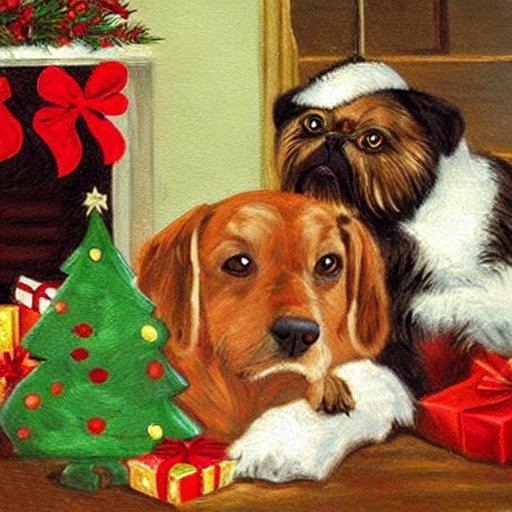

Jak to bylo na Vánoce
„Heč,“ povídala kočička pejskovi, „já něco vím.“ – „A copak?“ divil se pejsek. „Heč,“ povídá kočička, „já vím, že pan Čapek má napsat na Vánoce nějaké povídání pro ty malé děti, zase něco o nás, o kočičce a pejskovi.“ – „Hehe,“ těšil se pejsek, „ale jen aby to tam o mne pěkně napsal!“ – „Ba ne,“ řekla kočička, „on nemůže na nic připadnout, sedí u toho stolu, pořád přemýšlí, a pořád neví, co by napsal. Sedí a sedí, a pořád nic.“ – „To je chyba,“ prohlásil pejsek, „pak ho třeba nic správného nenapadne a napíše o nás nějaké hlouposti.“ – „No, právě,“ povídala kočička, „taky mám z toho trochu strach. Měli bychom mu něco poradit. Mně ani není tak o toho pana Čapka, ale o ty děti, co jim to budou číst.“
„To je pravda,“ řekl pejsek, „jakpak by ty dětičky k tomu přišly, aby měly o Vánocích o nás nějaké špatné povídání? Pojď a poradíme tomu panu Čapkovi něco!“ – „Tak půjdeme,“ rozhodla kočička, „ale zadarmo to neuděláme, jsou Vánoce a my tady nemáme ani kousek vánočky; musí nám za tu radu něco dát.“
Tak se pejsek s kočičkou sebrali a šli dát radu panu Čapkovi, který nevěděl, co o nich na ty Vánoce dětem napsat. „Já už vím,“ povídá pejsek cestou, „já už vím, co mu poradím! Řeknu mu, aby napsal povídání o tom, že ty jsi zakletá princezna a já že jsem zakletý princ.“ – „Jakýpak zakletý princ,“ smála se mu kočička, „když máš blechy! To princové nemají, kdopak ti tohle bude věřit, princové nemají blechy, ty mají jen psi.“ – „Však ty taky nejsi žádná zakletá princezna,“ řekl pejsek, „však jsem zrovna tuhle viděl, že jsi se drbala.“ – „Proč bych se nedrbala,“ řekla kočka, „když mě to štípalo! Ale kdybych chtěla, mohla bych třeba panu Čapkovi říci, že já jsem zakletá princezna a ty blechy že jsou zakleté komorné.“ – „A já bych mohl říci,“ chlubil se pejsek, „že ty moje blechy, to že jsou zakletí rytíři a že jich mám celé vojsko.“ – „Nu, víš, pejsku, tohle nebudeme povídat,“ usoudila kočka, „ten pan Čapek by nám to ještě možná uvěřil, ale ty děti by to jistě nevěřily a řekly by, že to špatně napsal. Poradíme mu raději něco šikovnějšího, co by nám bylo dobré, když si s námi dětičky chtějí hrát. To víš, někdy to bývá trápení, jak nás ty dětičky tahají. Tak ať něco o tom pan Čapek dětem napíše a my z toho budeme mít užitek.“ – „Ba, to je pravda,“ řekl pejsek, „od některých dětí jsem zkusil moc, až jsem raději utek.“
Tak si pejsek s kočičkou povídali, až došli k panu Čapkovi.
Pan Čapek seděl za stolem, pero držel v ruce, nemohl na nic připadnout a nevěděl, co psát. „Propánajána,“ povídá si, „copak já mám na Vánoce napsat těm dětem o pejskovi a kočičce, když mě nic nenapadá? Kdyby mně tak někdo přišel poradit!“
Vtom něco zaťukalo na dveře, vstoupili pejsek s kočičkou a řekli: „Pane Čapek, my vám jdeme poradit.“ – „Děkuji vám,“ zvolal pan Čapek radostně, „vy jste mne vysvobodili! V zemi, která se jmenuje Redakce, panuje zlý obr jménem Klíma, jenž sídlí za devaterými dveřmi v jeskyni, která se zove Šéfárna. Ten mně uložil přetěžkou práci, abych rychle napsal vánoční povídání pro děti, ale já pořád nevím co, a nic mě nemůže napadnout. Tak si tu lámu hlavu a přemýšlím již sedm dní a sedm nocí, a pořád mně nemůže nic napadnout a pořád nevím, co bych těm dětem o pejskovi a kočičce napsal. ‚Nenapíšeš-li,‘ rozkázal mně strašným hlasem obr Klíma, ‚proměním tě v tvarohový sloup a budeš tak u psacího stolu přemýšlet až do konce světa a budeme tě těm dětem ukazovat pro hanbu za vstupné padesáti haléřů.‘ Tak tu tedy, milý pejsku a kočičko, sedím a nevím co, až vy jste přišli mně poradit. Vysvobodili jste mne od toho strašlivého osudu, že bych se měl stát sochou z tvarohu, i dám vám za to, čeho si jen budete přát.“
„Uděláme vám to, pane Čapek, lacino,“ povídá na to kočka, „třebaže teď na Vánoce všechno přidražilo. Tak já vám radím, abyste napsal, že kočka má ocas.“ – „To vím,“ podivil se pan Čapek, „ale co s tím?“ – „Ó panečku, s tím je mnoho,“ řekla kočka, „kočičí ocas je pro kočku ta největší ozdoba. Jak by to na světě vypadalo, kdyby kočka měla ocas kravský nebo koňský a kůň nebo kráva měli ocas kočičí? Ale ono je to na světě kupodivu všechno tak správně zařízeno, že kočka má ocas kočičí a žádný jiný, a proto si ho váží a je na něj hrdá. Když si kočka sedne nebo lehne, založí si jej pěkně kolem sebe, když kočka kráčí, nese jej tak vznešeně za sebou, že se každý ohlíží, jak jí to krásně sluší. A když se kočka zlobí, tak tím svým ocasem tak přísně mává, že se každý lekne. Na to všechno, pane, má kočka svůj ocas.“
„To taky vím,“ povídá pan Čapek, „však vám, kočkám, také nikdo ten váš ocas nebere. Aspoň jsem nic takového v novinách nečetl, a čtu je přece denně.“ – „Jakpak nebere?“ řekla kočka, „malé děti nás za něj berou! Tuhle si chtěla jedna holčička se mnou hrát a chytla mne za ocas, jako kdyby to bylo držadlo od lívanečníku. Neptejte se, jak jsem se o ten ocas bála a jak to bolelo! Tak vám mě za něj táhla, že jsem namouduši myslila, že mně jej utrhne. Já vám nejdřív plakala, pak jsem vrčela, nato skuhrala a nakonec syčela, a když už jsem si nevěděla rady, tak jsem ji ťapičkou sekla. Jenom trochu, ale to svět neviděl, co ta holka nadělala křiku! Tak byste měl, pane Čapek, do těch vánočních novin napsat, aby děti netahaly nás kočky za ocas, nebo si nikdy s nimi nebudeme hrát.“
„Máme to my zvířátka vůbec někdy s dětmi trápení,“ připojil se pejsek. „Nás, pejsky, zas tahají za uši, a to vám bolí, že se to ani vypovědět nedá. Pes má uši na hlídání, pořád jen poslouchá, kde se co šustne, aby to tak nebyl zloděj nebo loupežník; pes má, panečku, ouška nějak citlivá! A teď si představte, že přijde takový kluk, sám má uši třebas nemyté, a teď vás tahá za ouška a cásá za ně, jako kdyby to byl nějaký hadr. A ještě vám přitom třeba šlápne na nohu, až to kvikne. To pak, pane, jak jsem dobrák od kosti (já nejraději takhle ty měkčí, z drůbeže nebo telecí), to pak přestávají všechny špásy a usápnu se na kluka a zařvu na něj: ‚Jedeš, ztrať se, ztrať, nebo bych tě raf!‘ – nu a pak kluk utíká a brečí, že byl pes na něho zlý. Tak to taky byste měl, pane Čapek, do těch vánočních novin napsat, aby děti netahaly psy za ouška a nešlapaly jim na tlapičky.“
„A to tam zároveň napište, aby taky kočkám nešlapaly na tlapičky a netahaly je za ouška,“ připojila se kočka, „nás to taky bolí, zrovna tak jako psy.“ – „A pejsky ať taky netahají za ocas, to my také nemáme rádi,“ řekl pes. „Tak teď to všechno napište a dejte nám něco za dobrou radu.“
Tak tedy pan Čapek dal kočičce za dobrou radu kus vánočky a – protože jsou Vánoce – k tomu měchýř z ryby. Psovi – ten fíky, datle ani pomeranče nejí – dal pořádný konec salámu, tři syrečky a několik kostek cukru. „Tak vidějí, vašnosti, dali jsme jim tu radu lacino,“ řekli pes s kočičkou, „zrovna jsme si něco takového na zub přáli. Tak jim děkujeme, má úcta a veselé Vánoce! A ať je to v těch novinách napsáno všechno tak, jak jsme to řekli!“
Odešli spokojeně domů a pan Čapek sedl ke stolu a všechno to teď začal psát, jak to bylo, až to všechno napsal, jak mu to kočička a pejsek řekli.
Napsal on to tak dobře, jak mu to kočička a pejsek řekli? Jestli on to nenapsal jinak, než to bylo? My to dobře víme, jak mu to ten pejsek s kočičkou všechno řekli! povídají děti. Jestli to akorát tak nenapsal, ať je z něho sloup z tvarohu a my se na něj budeme chodit dívat za padesát haléřů. – Nu tak, děti, když víte, jak to bylo, a pan Čapek to teď zrovna dopsal, tak si to musíte přečíst znovu, abyste se přesvědčili, napsal-li to zrovna tak, jak to víte, jak to bylo s panem Čapkem, pejskem a kočičkou.